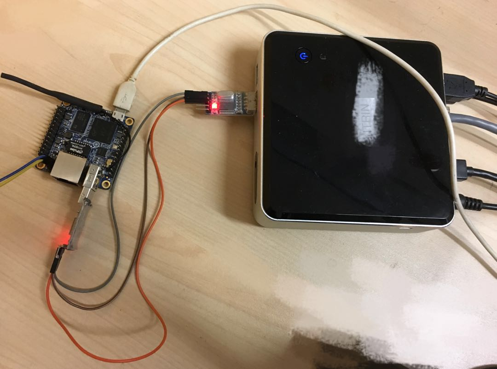
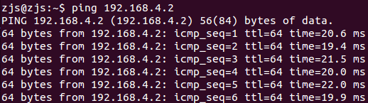
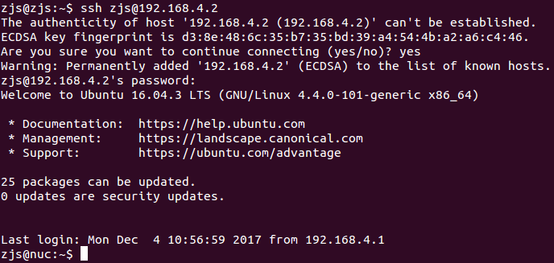

在上一篇《Linux串口网卡（一）——通用虚拟网卡的实现》中我已经实现了一个内核模块，也就是一张虚拟网卡。现在，所有需要通过该网卡（eth_uart）发送出去的帧都可以从/proc/eth_uart/uio这个虚拟文件中读到，一次read()就是一个帧。也可以向/proc/eth_uart/uio写入一个接收到的帧。所以这次的重点就是收发串口与转发。
本来我打算开两个线程A和B，线程A从/proc/eth_uart/uio阻塞式读取帧，每次读到一个，就通过串口阻塞式发送出去；线程B从串口阻塞式读取帧，读到一个帧就交给/proc/eth_uart/uio。但是经过实验，发现这里面有一个大坑——x86上的串口驱动程序有bug，对同一个串口进行并发读写时会卡死。其中的心酸泪就不说了，记住这个结论就好。
既然不能使用多线程，那么也就是说所有的IO操作都要在一个线程中完成咯，于是自然而然地想到最佳的办法就是select/poll机制。所以我在虚拟网卡中特意增加了对select/poll机制的支持。并不是什么先见之明，而是马后炮罢了，呵呵呵。
对于/proc/eth_uart/uio而言，read()和write()的交互单位都是一整个帧，所以没有什么难点。但是对于串口，读写的单位都是字节。串口的收发速度是有限的，select/poll机制下，需同时监控可读和可写事件。当可读时，就从串口中读取尽量多的字节。当可写时，就向串口写出尽量多的字节。因此，需要监控最多三个事件：
- /proc/eth_uart/uio可读事件
- 串口可读事件
- 串口可写事件
之所以不需要监控/proc/eth_uart/uio可写事件，是因为对/proc/eth_uart_uio的write()操作几乎是立即返回的，而且随时可写。这三个事件中，“串口可写事件”并不是一直需要监控的。只有当有数据需要通过串口发出时，才有监控“串口可写事件“的必要。由于串口可读可写时，可能只能读取或写入少许几个字节，所以必须得维持一个”待发送缓冲区“和”接收缓冲区“。
另一个问题是，当帧变成字节流传输在串口线上时，如何标记帧的开始与结束？这种问题的通用解就是定一个开头和结尾标记，并且真正的数据需要使用转义。具体方案很多种，我的方案如下：
- 两个连续字节如果是255, 0，那么是START命令，即一个帧的开头
- 两个连续字节如果是255, 1，那么是END命令，即一个帧的结尾
- 两个连续字节如果是255, x(x > 1)，那么就是单字节x
在该方案中，把255当作一个转义符号，表示其后面的一个字节有特殊含义。既然255作为转义符号，那么如果数据中本身就有255，那么怎么办？所以就变成两个字节255, 255。
好了，那么就直接看代码吧！
eth_uart.c
#include <fcntl.h>
#include <stdio.h>
#include <stdint.h>
#include <string.h>
#include <unistd.h>
#include <termios.h>
#include <sys/select.h>
// 打开串口，配置为115200, 8N1, 无流控
int open_uart(const char* dev)
{
struct termios options;
//清空所有属性
memset(&options, 0, sizeof(options));
//设置输入输出速率为115200
cfsetispeed(&options, B115200);
cfsetospeed(&options, B115200);
//8个数据位
options.c_cflag |= CS8;
//无校验位（其实这句可以不写，因为已经全部清0，只需要设置为1的位）
options.c_cflag &= ~PARENB;
//1个停止位（其实这句可以不写，因为已经全部清0，只需要设置为1的位）
options.c_cflag &= ~CSTOPB;
//超时时间为0
options.c_cc[VTIME] = 0;
//每次接收长度为1个字节
options.c_cc[VMIN] = 1;
// 可能的错误信息
char error[1024];
// 打开设备
int fd = open(dev, O_RDWR | O_NOCTTY | O_NDELAY);
if(fd < 0)
{
sprintf(error, "<eth_uart> open('%s') failed!\n", dev);
goto err;
}
// 设置属性
if(tcsetattr(fd, TCSANOW, &options) != 0)
{
strcpy(error, "<eth_uart> tcsetattr() failed!\n");
goto err;
}
// 清空缓存
if(tcflush(fd, TCIOFLUSH) != 0)
{
strcpy(error, "<eth_uart> tcflush() failed!\n");
goto err;
}
return fd;
// 错误处理
err:
if(fd > 0)
close(fd);
printf("%s", error);
return -1;
}
// 初始化网卡IO口和串口
int init(const char* eth_uio, const char* uart_dev, int* fds)
{
// 可能的错误信息
char error[1024];
// 打开网卡输入输出口
int eth_fd = open(eth_uio, O_RDWR);
if(eth_fd < 0)
{
sprintf(error, "<eth_uart> open('%s') failed!\n", eth_uio);
goto err_1;
}
// 设置为非阻塞
if(fcntl(eth_fd, F_SETFL, fcntl(eth_fd, F_GETFL, 0) | O_NONBLOCK) < 0)
{
strcpy(error, "<eth_uart> fcntl(eth, O_NONBLOCK) failed!\n");
goto err_2;
}
// 打开串口
int uart_fd = open_uart(uart_dev);
if(uart_fd < 0)
{
// 错误信息在open_uart()中已经输出
strcpy(error, "");
goto err_2;
}
// 两个文件描述符，传出
fds[0] = eth_fd;
fds[1] = uart_fd;
return 0;
// 错误处理
err_2:
close(eth_fd);
err_1:
;
printf("%s", error);
return -1;
}
int main_routine(int eth_fd, int uart_fd, int max_buf)
{
// 可能的错误信息
char error[1024];
// 要通过串口发出的字节流
uint8_t to_send[max_buf];
// 要通过串口发出的字节流的长度
int to_send_len = 0;
// 已经通过串口发出的长度
int sent_len = 0;
// 正在通过串口接收的帧
uint8_t recving[max_buf];
// 已经接收的帧长度
int recving_len = 0;
// 下一个接收到的字节是否需要转义
int is_escape = 0;
while(1)
{
// 标记“网卡可读”，“串口可读”，“串口可写”
int can_eth_read = 0, can_uart_read = 0, can_uart_write = 0;
// 没有需要通过串口发送的字节流
if(to_send_len == 0)
{
// 等待可读的文件描述符集合
fd_set rds;
FD_ZERO(&rds);
FD_SET(eth_fd, &rds);
FD_SET(uart_fd, &rds);
// select等待
if(select((eth_fd > uart_fd ? eth_fd : uart_fd) + 1, &rds, 0, 0, 0) < 0)
{
strcpy(error, "<eth_uart> select(eth + uart, READ) error!\n");
goto err;
}
can_eth_read = FD_ISSET(eth_fd, &rds);
can_uart_read = FD_ISSET(uart_fd, &rds);
}
// 有需要通过串口发送的字节流
else
{
// 等待可读的文件描述符集合
fd_set rds;
FD_ZERO(&rds);
FD_SET(uart_fd, &rds);
// 等待可写的文件描述符集合
fd_set wrs;
FD_ZERO(&wrs);
FD_SET(uart_fd, &wrs);
// select等待
if(select(uart_fd + 1, &rds, &wrs, 0, 0) < 0)
{
strcpy(error, "<eth_uart> select(uart, READ + WRITE) error!\n");
goto err;
}
can_uart_read = FD_ISSET(uart_fd, &rds);
can_uart_write = FD_ISSET(uart_fd, &wrs);
}
// 如果网卡可读
if(can_eth_read)
{
uint8_t frame[max_buf];
// 从网卡读一个帧
int len = read(eth_fd, frame, max_buf);
// 避免poll机制的误判
if(len == 0)
continue;
if(len < 0)
{
sprintf(error, "<eth_uart> read(eth) == %d!\n", len);
goto err;
}
else if(len > max_buf / 2)
{
sprintf(error, "<eth_uart> read(eth) == %d, too long!\n", len);
goto err;
}
// 编码成串口上发送的字节流
// 开头有START指令，表达为 255,0
to_send[to_send_len++] = 255;
to_send[to_send_len++] = 0;
// 原始帧中的255编码为 255,255，其他不变
for(int i = 0; i < len; i++)
{
to_send[to_send_len++] = frame[i];
if(frame[i] == 255)
to_send[to_send_len++] = 255;
}
// 结尾有END指令，表达为 255,1
to_send[to_send_len++] = 255;
to_send[to_send_len++] = 1;
}
// 如果串口可读
else if(can_uart_read)
{
// 经过编码的字节流
uint8_t encoded[max_buf];
// 从串口读
int len = read(uart_fd, encoded, max_buf);
if(len < 0)
{
sprintf(error, "<eth_uart> read(uart) == %d!\n", len);
goto err;
}
// 依次处理每个字节
for(int i = 0; i < len; i++)
{
uint8_t abyte = encoded[i];
// 如果当前是转义状态
if(is_escape)
{
// 遇到了 255,0，表示START指令，则清空之前的数据
if(abyte == 0)
recving_len = 0;
// 遇到了 255,1，表示END指令，则说明接收完了一个数据包
else if(abyte == 1)
{
// 解码后的帧传给网卡
if(write(eth_fd, recving, recving_len) != recving_len)
{
sprintf(error, "<eth_uart> write(eth, %d) != %d!\n", recving_len, recving_len);
goto err;
}
}
else
recving[recving_len++] = abyte;
// 退出转义状态
is_escape = 0;
}
// 不是转义状态
else
{
// 遇到了 255，说明接下来的字节是转义状态
if(encoded[i] == 255)
is_escape = 1;
else
recving[recving_len++] = abyte;
}
if(recving_len == max_buf)
{
strcpy(error, "<eth_uart> too big frame!\n");
goto err;
}
}
}
// 如果串口可写
else if(can_uart_write)
{
//尝试向串口写出
int sz = write(uart_fd, to_send + sent_len, to_send_len - sent_len);
if(sz <= 0)
{
sprintf(error, "<eth_uart> write(uart) == %d!\n", sz);
goto err;
}
sent_len += sz;
// 全部发出
if(sent_len == to_send_len)
{
to_send_len = 0;
sent_len = 0;
}
}
}
err:
printf("%s", error);
return -1;
}
int main()
{
// 两个文件描述符，分别是网卡IO口和串口
int fds[2];
if(init("/proc/eth_uart/uio", "/dev/ttyUSB0", fds) != 0)
return -1;
if(main_routine(fds[0], fds[1], 4096) == -1)
return -1;
// 关闭文件
close(fds[0]);
close(fds[1]);
return 0;
}
其实代码还是很简单的，只需要注意select/poll机制的合理使用即可。
接下来就是见证奇迹的时刻了！首先需要有两台Linux机器，命名为A和B，具体硬件平台无关。两台机器各自插上一个USB-TTL，两个USB-TTL之间使用三条线连接，即
- A.GND----B.GND
- A.RX----B.TX
- A.TX----B.RX

并确保在两台机器上，各自的USB-TTL都被识别为/dev/ttyUSB0。
按照《Linux串口网卡（一）——通用虚拟网卡的实现》最后说的，编译加载模块，使得能通过ifconfig -a看到网卡。然后使能网卡，并配置IP地址。A机器上：
ifconfig eth_uart up ifconfig eth_uart 192.168.4.1
B机器上：
ifconfig eth_uart up ifconfig eth_uart 192.168.4.2
注意在很多Ubuntu机器上，可能存在一些自动管理网络接口的工具，记得关闭，或者让工具不要管理eth_uart这个网口。
接着编译、运行上面的代码（两台机器上都需要执行）：
gcc -std=gnu99 eth_uart.c -o eth_uart ./eth_uart
此时，在A机器上：
ping 192.168.4.2
可以看到能ping通，而且两个USB-TTL都在闪烁：

接着试试ssh。从A机器上发起登陆（先确保B机器开了ssh服务）：

成功登陆！而且可以正常的操作！操作的时候，两个串口都闪得很厉害，说明在进行通信~~~